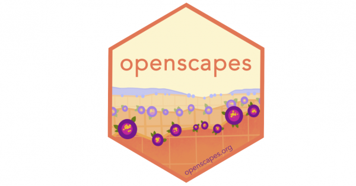
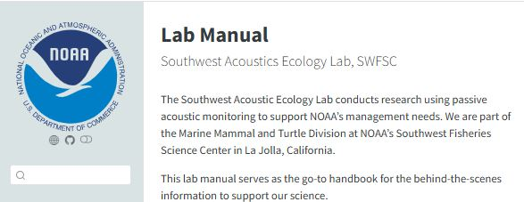
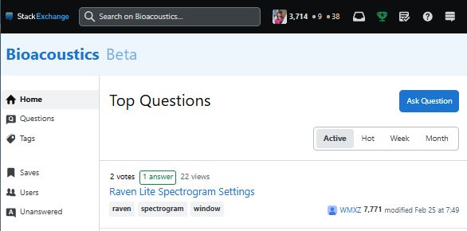
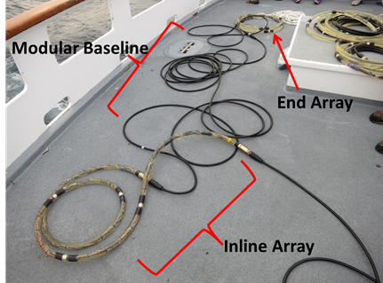

Open Science
NOAA Fisheries PAM- Strategic Initiative Open Science

As part of the NOAA Fisheries National Strategic Initiative for Passive Acoustic Monitoring, I’ve been co-leading the Open Science Team to encourage adoption of Open Science methods for PAM Teams across all NOAA Science Centers. This included developing a National PAM Network platform that links to platforms for each of the NOAA Science Centers and each of the PAM-SI Teams. As part of this work, we continually update a Open Science site that provides methods and additional resources for our community. This work began in early 2024 and is ongoing.
Openscapes Mentor

As an Openscapes Mentor, I am working with the Openscapes community to learn about Open Science tools and to further develop ‘soft skills’ necessary for effective mentorship. Methods learned are directly applied to our NOAA Fisheries PAM-SI Open Science initative (above).
Southwest Acoustic Ecology Lab

In 2021 we began to transition our Southwest Acoustic Ecology lab to an Open Science Framework. This effort included developing: Lab Manual that serves as a landing page for all the work we do Github Repositories for our ongoing work Weekly Co-working meetings to provide a focused time for working together
Free and Open Science Software for Acoustics (FOSSA)

FOSSA provides a streamlined approach to analyzing passive acoustic data using open source software (R programming language). While I lead each of these efforts, all the programming was performed by team members. Combined with PAMGuard open source software, these packages together provide an end-to-end open source workflow for efficient and standardized processing of acoustic data. These efforts are now being adopted and expanded nationally as part of the NOAA PAM-Strategic Initiative.
PAMPAL- functions to extract acoustic metadata, integrate ancillary data, and generate output for downstream analyses. PAMpal currently works with acoustic detections generated within PAMguard software. Funding by NOAA’s Advanced Science and Technology Working Group, programming development by Taiki Sakai.
BANTER- an event-based classification scheme incorporating multiple detection or call types (see Rankin et al. 2017 & BANTER Guidelines). Funding by NOAA’s Ocean Acoustics Program and NOAA’s Advanced Science and Technology Working Group, programming by Eric Archer.
PAMScapes- tools relevant to analysis of marine soundscape data. Funding by NOAA’s Ocean Acoustics Program, programming development by Taiki Sakai.
Bioacoustics Stack Exchange

Stack Exchange is a crowd-sourced Question & Answer site where information is archived and publicly accessible. In 2022 I led an effort to develop a Bioacoustics Stack Exchange site to provide a place for people to share information and empower scientists and practitioners from underserved communities to use good science. The proposal process required several months of dedication and required global outreach to scientists in the field of bioacoustics.
The Bioacoustics Stack Exchange site is now a thriving portal with over 2,500 users, and links to questions on this site are top responses in relevant google searches. ## Zotero Group Libraries Zotero is an open source tool for organizing and sharing bibliographic resources. As part of larger research projects, we have developed public Zotero group libraries for Soundscape and for PAM-Glider literature.
Open Hardware

My predecessor at SWFSC, Jay Barlow, had led the development of towed hydrophone arrays for use on shipboard surveys. As the need for using this equipment increased, I saw a need to expand our approach to allow for expanding the modularity of these developments and sharing these capabilities with the wider scientific community.
With funding from NOAA’s Ocean Acoustics Program, I hosted a workshop to develop open access tutorials and share these methods with our colleagues during a workshop hosted by SWFSC. The tutorial was made available through NOAA (A guide to constructing hydrophone arrays for passive acoustic data collection during NMFS shipboard Cetacean surveys), and this Blog by our Pacific Islands’ colleagues outlines the value of this workshop.